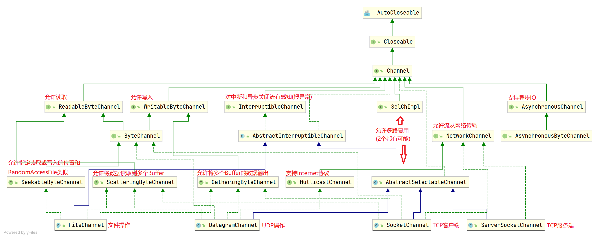
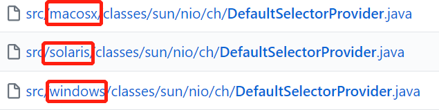

Channel
ChannelIO(NIO)有三大核心部分: Buffer(缓冲区), Channel(通道), Selector(选择器)
Channel和Stream本质上应该是一个东西, 因为都是通过系统调用从内核空间中转移数据到用户空间中(存疑, 因为没有看到过有类似的博客, 但看Api是差不多的...)
和Stream的区别主要有以下几点
Channel可以同时兼具读写，Stream是单向的
特定的Channel可以是非阻塞的, Stream只能是阻塞的
FileChannel阻塞, SocketChannel在配置了
configureBlocking(false)的情况下非阻塞Channel是基于Buffer读写, 而Stream是基于数组读写
感觉Channel就是Stream在使用上优化了一点而已
Channel中比较中要的几个实现
FileChannel
文件的数据读写
DatagramChannel
UDP的数据读写
SocketChannel
TCP的数据读写(客户端)
ServerSocketChannel
监听TCP链接请求(TCP服务端)
FileChannel有个
transferTo()能将通道进行连接, 可以用于拷贝文件. 比循环一个Channel读取出来然后再循环写入另一个Channel好
Channel继承关系图及作用
一般一个Channel接口对应一个功能, 如果先快速了解实现类有什么作用, 可以看它继承了那些接口
SelectableChannel和GatheringByteChannel

各个系统的NIO实现
另外具体使用什么Channel和JDK(或者说系统)也是有关系的.
比如Linux和Win
/**
* 以下代码win和Linux的一致.
* 但provider()返回值不一样. 也可以说SelectorProvider就不一样了.
*/
public static SocketChannel open() throws IOException {
return SelectorProvider.provider().openSocketChannel();
}
下图所示是个版本JDK中DefaultSelectorProvider的路径.
可以看到都是一致的. 但是一个系统只能安装各自版本的JDK. 所以生成的类按照系统是有区别的

// linux中DefaultSelectorProvider的create()
// 可以看到按照具体系统的细分返回各自的Provider
public static SelectorProvider create() {
String osname = AccessController
.doPrivileged(new GetPropertyAction("os.name"));
if (osname.equals("SunOS"))
return createProvider("sun.nio.ch.DevPollSelectorProvider");
if (osname.equals("Linux"))
return createProvider("sun.nio.ch.EPollSelectorProvider");
return new sun.nio.ch.PollSelectorProvider();
}
// win中DefaultSelectorProvider的create()
public static SelectorProvider create() {
return new sun.nio.ch.WindowsSelectorProvider();
}
从上面代码可以看出. 按照个系统对JDK的不同实现可以返回不同的Provider.
这解答了我学习NIO前的一个疑问: NIO明明是有3种select, poll, epoll. 为什么Selector只有一个实现.
原因就是JDK已经帮我们实现好了最优的NIO方案(epoll > poll > select(select还有必要吗?))